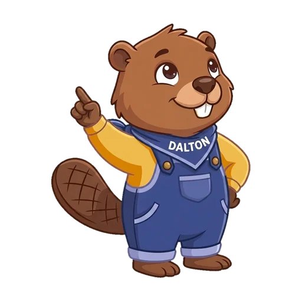
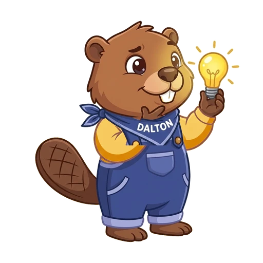

Toegepaste Informatica · les 07
Lesstart (0–2'). De vaste startdia (sinds 09-10-2026, elke les dezelfde, voor alle klassen). Laat ze op het bord staan terwijl de leerlingen aanmelden.
Het wachtwoord van de computers staat niet op de dia: de dia's staan openbaar online. Zeg het, of schrijf het op het bord.
Ga verder als de meesten de lespagina open hebben.
Lesstart · 3 minuten
Je map van les 06
Tom zoekt de factuur van Papierhandel Vellekens. Waar zit ze, en hoe heet ze?
In de map Facturen, met de naam Wat - Van wie. Vandaag zet je er nog iets vóór.
Lesstart (3'), ophalen uit les 06. Iedereen antwoordt tegelijk met vingers: 1, 2 of 3 vingers voor A, B of C. Druk daarna op → voor het antwoord.
Wie A kiest: "De naam is goed, maar staat ze in de juiste map?" Wie C kiest: "Weet je van wie het is? En wat betekent def (2)?"
Begin met de naam die vorige les het vaakst misliep in deel 2 van de werkdocumenten, als die anders was.
Iemand heeft geen map NovaDepot, of er ontbreken mappen? Zeg: "Stap 1 op de lespagina, Hulp nodig?: daar haal je de kant-en-klare map. Dat duurt twee minuten."

Ik doe · dia 1 van 4
Ik leg 6 minuten uit. Daarna werk jij zelfstandig met de lespagina, en kom ik bij jou langs.
Ik doe, 0'30". Lesdoel voorlezen, niet toelichten. Zeg er meteen bij dat de uitleg maar zes minuten duurt en dat alles daarna op de lespagina staat.
Ik doe · dia 2 van 4
Wat vooraan staat, bepaalt de volgorde.
Ik doe, 1'30". Het eindproduct. Wijs per map aan wat er vooraan staat: een datum, een nummer, de naam van de leverancier. Druk op → voor de zin onderaan.
Vraag: "Bij de prijslijsten staat er niets vooraan. Waarom staan ze toch goed?" (Ze beginnen allemaal met Prijslijst -, dus beslist de naam van de leverancier.)
Eén zin over het waarom: "Een bedrijf moet zijn facturen jaren bewaren. De boekhouding vraagt naar factuur 0409: in deze map vind je ze meteen."
Ik doe · dia 3 van 4
Drive zet de namen van A tot Z. Welke bon is de oudste?
Zo staat de datum op de bon: dag-maand-jaar
Zo schrijf jij ze: jaar-maand-dag
Ik doe, 1'30". Het probleem eerst. Laat de vraag beantwoorden voor je klikt. Verwacht: "28 september is de oudste." Vraag: "Waarom staat ze dan onderaan?"
Klik (→): de pijl verschijnt. Uitleg: "Drive leest van links naar rechts, teken per teken. 0 komt vóór 1, en 1 vóór 2. Of het een dag is of een jaar, weet Drive niet."
Klik (→): jaar-maand-dag. "Zet het grootste vooraan: eerst het jaar, dan de maand, dan de dag. Nu klopt de volgorde." Wijs aan: op de bon staat 28-09-2026, jij schrijft 2026-09-28: de drie stukken omgedraaid.
Ik doe · dia 4 van 4 · demo
2026-10-13 Leveringsbon - Bakkerij Korstjes.docx
Zonder Home typ je over de hele naam. Dan is ze weg.
Ik doe, 2' — hardop denkend voordoen in je eigen map NovaDepot (klaarzetten: zie README, stap 2).
Druk op → voor de waarschuwing. Toon dan nog kort het omgekeerde: "Staat de nieuwste bovenaan? Sorteren › Naam › A tot Z." (Staat op de lespagina bij Hulp nodig?, stap 4.)
Stap 2 en 3 (zip-bestand, verplaatsen) doe je niet voor: dat kennen ze uit les 06. Op deze computers pakken ze uit in de Verkenner; de lespagina zegt hoe. Ga meteen door naar Zo werk je verder.
Keuzewerktijd · 40 minuten
Vast?
1. Theoriekaart
2. Hulp nodig?
3. Je buur 4. Ik
Vink af in de checklist.
Alles staat in de opdracht in Google Classroom Werkplek 2 — Het digitale klassement: de lespagina, je werkdocument en de zip-bestanden.
Je levert alleen je werkdocument in.
Adres: jonasdaltongent.github.io/Klassement-NovaDepot/
Keuzewerktijd, 40'. Laat deze dia staan zolang ze werken. De minuten per stap tellen samen op tot 40, inleveren inbegrepen.
Eerste rondgang: wie les 06 miste, haalt in stap 1 de kant-en-klare map (NovaDepot.zip). Kijk daarna of in stap 2 de zes losse bestanden in NovaDepot staan, en niet het zip-bestand. Uitpakken: Verkenner (Windows + E) › Downloads › rechtermuisknop › Alles uitpakken…
Tweede rondgang, rond stap 4: laat een nieuwe naam luidop lezen. "Staat het jaar vooraan? Staat de oudste bon bovenaan?" Bij stap 5: "Welk nummer koos je, de datum of het factuurnummer?"
Vergeet niet het adres op deze dia aan te passen als de repository anders heet.

Afsluiten · laatste minuut
Factuur 2026-0401 komt binnen. Waar komt ze in je map Facturen?
Tussen 2026-0398 en 2026-0409: op de tweede plaats.
Volgende les: delen met de juiste rechten. Wie mag jouw planning lezen, en wie mag ze veranderen?
Afsluiting, laatste minuut van de keuzewerktijd. Laat twee of drie leerlingen antwoorden, en druk dan op → voor het antwoord. Wie "bovenaan" zegt, keek naar de datum of las het nummer niet helemaal.
Zeg mondeling dat wie niet klaar is, toch inlevert.
Kijk na de les naar deel 3 van de werkdocumenten: kunnen ze uitleggen waarom jaar-maand-dag? Begin les 08 daarmee als het vaak misliep.